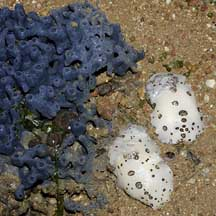
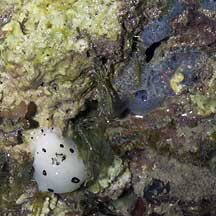
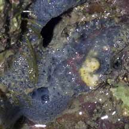
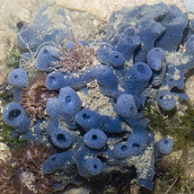
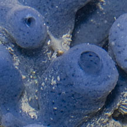
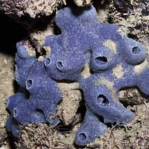
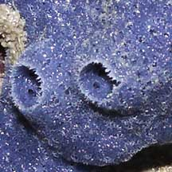
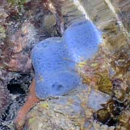
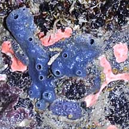
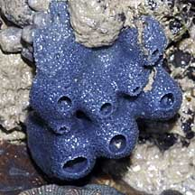

|
|
| sponges text index | photo index |
| Phylum Porifera |
| Blue
jorunna sponge Neopetrosia sp.* Family Petrosiidae updated Jul 2020 Where seen? This bright blue sponge is sometimes seen on some of our shores. On coral rubble. Features: About 6-10cm sometimes larger. Is generally encrusting, with small (5cm in diameter) knobs and bumps all over. Each knob or lump has a large hole at the tip with a narrow membraneous lip, seen when the sponge is submerged. Texture somewhat rough. Usually electric blue. It appears to be among the favourite food of the Polka-dot nudibranch (Jorunna funebris) and this nudibranch is often seen laying egg masses near the sponge. |
 A pair of the nudibranchs near the sponge. Pulau Sekudu, Jun 06 |
 Chewed up sponge Pulau Sekudu, Jun 06 |

|
 St. John's Island, Jun 07  The nudi was seen next to a chomped up blue sponge. |
 Pulau Sekudu, Jul 05  |
 Labrador, Jul 05  |
*Species are difficult to positively identify without close examination.
On this website, they are grouped by external features for convenience of display.
| Blue jorunna sponges on Singapore shores |
| Photos of Blue jorunna sponges for free download from wildsingapore flickr |
| Distribution in Singapore on this wildsingapore flickr map |
 Terumbu Pempang Darat, Jun 10 Photo shared by James Koh on his blog. |
 Pulau Salu, Jun 10 |
 Terumbu Salu, Jan 10 |
 Pulau Sudong, Dec 09 |
Links
|